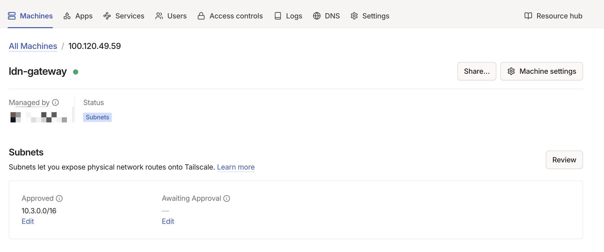
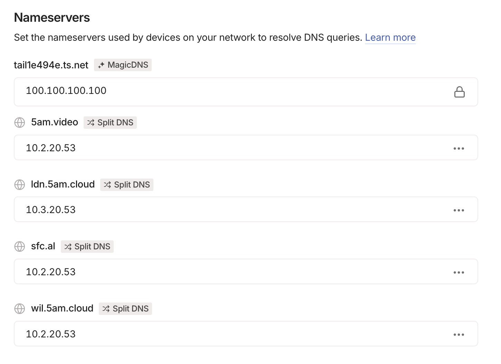

VPN (Tailscale)
Tailscale creates an encrypted WireGuard mesh network between geographically distributed environments. Subnet routers on each site's networking VM advertise local subnets, enabling cross-site communication over the CGNAT range (100.64.0.0/10).
File Locations
| File | Purpose |
|---|---|
ansible/roles/tailscale/tasks/main.yml |
Installation, configuration, and authentication |
ansible/roles/tailscale/defaults/main.yml |
Default variable values |
ansible/roles/tailscale/handlers/main.yml |
Service restart handler |
Deployment Modes
Tailscale supports two modes, controlled by tailscale_mode:
Client
Default mode. Joins the Tailscale mesh as a regular node. Accepts routes from subnet routers to reach other sites.
Subnet Router
Advertises local network routes to the mesh. Used on networking VMs to make an entire site reachable from other sites. Enables:
- IP forwarding —
net.ipv4.ip_forward=1andnet.ipv6.conf.all.forwarding=1via sysctl - NAT masquerade — iptables rule for
100.64.0.0/10traffic so Tailscale clients can reach non-Tailscale hosts on the local network - Systemd override — ensures
tailscaledstarts after the network is online
graph LR
subgraph WIL["WIL (10.2.0.0/16)"]
WIL_SR["Subnet Router\n10.2.20.53"]
WIL_VM["Local VMs"]
end
subgraph LDN["LDN (10.3.0.0/16)"]
LDN_SR["Subnet Router\n10.3.20.53"]
LDN_VM["Local VMs"]
end
WIL_SR <-->|"WireGuard Tunnel\n100.64.0.0/10"| LDN_SR
WIL_SR --- WIL_VM
LDN_SR --- LDN_VM
WIL_VM -.->|"via subnet router"| LDN_VM
Configuration Reference
All variables are set in the host or group vars for machines running Tailscale. Defaults are defined in ansible/roles/tailscale/defaults/main.yml.
| Parameter | Type | Description | Default |
|---|---|---|---|
tailscale_mode |
string |
"client" or "subnet_router" (advertises routes, enables IP forwarding) |
"client" |
tailscale_auth_key |
string |
Auth key from Tailscale admin console (SOPS-encrypted) | "" |
tailscale_advertise_routes |
list[string] |
CIDRs to advertise (subnet_router only, requires admin approval) | [] |
tailscale_accept_dns |
boolean |
Accept DNS from Tailscale (disable on BIND9 hosts) | true |
tailscale_accept_routes |
boolean |
Accept routes from other Tailscale nodes | false |
tailscale_hostname |
string |
Hostname in the Tailscale admin console | "{{ inventory_hostname }}" |
tailscale_force_reauth |
boolean |
Force re-authentication on next run | false |
Cross-Site Connectivity
Tailscale subnet routers enable three critical cross-site functions. For non-Tailscale devices on the local network to use these routes, the UDM Pro must have static routes pointing remote subnets at the Tailscale subnet router VM.
DNS Zone Transfers
WIL and LDN DNS servers replicate zones via AXFR. The BIND9 servers reach each other through Tailscale using their local IPs (e.g., WIL queries LDN at 10.3.20.53), which the subnet routers make routable. See DNS — Cross-Site Zone Transfers.
Service Access
Services on one site can be accessed from the other. For example, a client in LDN can reach plex.5am.video because:
- LDN BIND9 has
5am.videoas a secondary zone (replicated from WIL) - The A record resolves to WIL's
reverse_proxy_ip(10.2.20.53) - Tailscale routes traffic to
10.2.20.53through the WireGuard tunnel
Trusted Network Configuration
Both sites include the Tailscale CGNAT range in their BIND9 trusted networks:
This allows DNS queries and zone transfers originating from Tailscale IPs.
DNS Integration
Networking VMs run both BIND9 and Tailscale. To prevent Tailscale from overriding the local DNS configuration:
Without this, Tailscale would push its own DNS servers (MagicDNS), which would conflict with the locally running BIND9 instance.
Split DNS entries in the Tailscale admin console route domain queries to the correct BIND9 server per site:

Security
| Aspect | Implementation |
|---|---|
| Encryption | All traffic uses WireGuard encryption (always on) |
| Authentication | Auth keys stored as SOPS-encrypted secrets |
| NAT traversal | Coordinated by Tailscale control plane; no public ports needed |
| IP forwarding | Enabled only on subnet routers, not clients |
| DNS isolation | Subnet routers disable Tailscale DNS to avoid BIND9 conflicts |
| Access control | Tailscale ACLs control which nodes can communicate |
Common Tasks
Set up a new subnet router
-
Set the Tailscale variables in the host's group vars:
-
Deploy:
-
Approve the advertised routes in the Tailscale admin console
Add a new site
- Set up Tailscale on the new site's networking VM as a subnet router (see above)
- On existing sites, ensure
tailscale_accept_routes: trueso they accept the new site's routes - Add static routes on each site's UDM Pro pointing the new subnet at the local Tailscale VM
- Add the new site's subnet to
dns_trusted_networkson existing DNS servers - Configure zone transfers between the new site and existing sites (see DNS — Configure zone transfer to a new secondary)
- Deploy all affected environments
Force re-authentication
If a node's auth key expires or the node needs to rejoin:
- Set
tailscale_force_reauth: truein the host's vars -
Deploy:
-
Reset
tailscale_force_reauth: falseafter successful authentication to avoid re-authing on every future run
Troubleshooting
Cross-site traffic not routing — Verify the subnet router is advertising routes: ssh <networking-ip> tailscale status. Check that routes are approved in the Tailscale admin console. Verify UDM Pro static routes point to the correct next hop.
"login required" on deploy — The auth key has expired. Generate a new one from the Tailscale admin console, update the SOPS-encrypted secret, and redeploy with tailscale_force_reauth: true.
DNS queries failing over Tailscale — Ensure 100.64.0.0/10 is in dns_trusted_networks on the target DNS server. Check that tailscale_accept_dns: false is set on networking VMs to prevent MagicDNS from overriding BIND9.